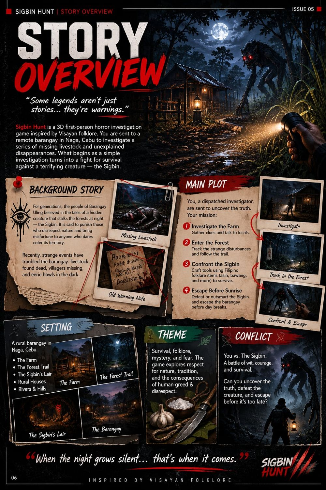
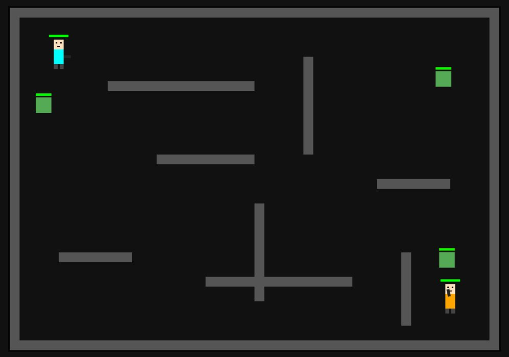

About me
I’m Maverick Jay E. Cutanda, a game developer who likes the part of a game players never see: how enemies think, how mechanics fit together, and how every function makes the world react. I work in Roblox Studio and write my game logic in JavaScript, with JSON to organize game data.
My biggest project, Sigbin Hunt, grew from wanting to make a horror game that feels local. Instead of borrowing monsters from elsewhere, I built the game around the Sigbin, a creature from Visayan folklore, and let its legends shape how the game plays. For that project I built the AI, the mechanics and the game functions.
I also made BoxHead Zombie, a 2D zombie survival game, where I focused on keeping the action fun and interactive. I’m always looking for the next project that lets me turn an idea into something people can play.
Projects
Sigbin Hunt
A 3D first-person horror investigation game set in a barangay in Naga, Cebu, built around Visayan folklore. Investigate, craft a weapon, kill the Sigbin and escape before sunrise.
- Roblox Studio
- JavaScript
- JSON
BoxHead Zombie
A fun and interactive 2D zombie survival game played in a walled arena.
Sigbin Hunt

A 3D first-person horror investigation game. You are sent to a remote barangay in Naga, Cebu to look into missing livestock and unexplained disappearances. The trail leads from a farm, through a forest, to the creature's lair. There you find proof that a Sigbin, a creature from Visayan folklore, is behind it.
From there you gather materials, craft a weapon that can hurt it, corner and kill it, then escape the barangay before sunrise.
I wanted to build a horror game rooted in Cebuano and Visayan culture. The Sigbin's own folklore drives the mechanics: its weakness to salt and garlic and its elusiveness shape the investigation, crafting and confrontation.
- Roblox Studio
- JavaScript
- JSON
Background
For generations, the people of Barangay Uling believed in a hidden creature that stalks the forests at night and punishes those who disrespect nature. Lately, livestock have been found dead, villagers are missing, and eerie howls come from the dark.
Setting
- The Farm
- The Forest Trail
- The Sigbin’s Lair
- Rural houses
- Rivers and hills
Theme and conflict
Survival, folklore, mystery and fear, with respect for nature and tradition at the centre. It is you against the Sigbin: wit, courage and survival.
The mission
- Investigate the farmGather clues and talk to locals.
- Enter the forestTrack the strange disturbances and follow the trail.
- Confront the SigbinCraft tools from Filipino folklore items such as asin and bawang.
- Escape before sunriseDefeat or outsmart it and leave the barangay before day breaks.
BoxHead Zombie
A fun and interactive 2D zombie survival game. You play as an armed survivor in a walled arena, using the obstacles for cover while waves of zombies close in.
Every character carries a health bar, so you can see at a glance how close you or a zombie is to going down. The layout rewards positioning: walls break up the arena, so you have to decide when to hold ground and when to move.
